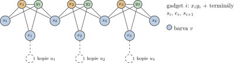
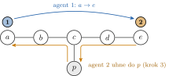
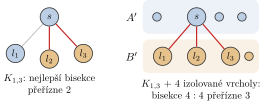
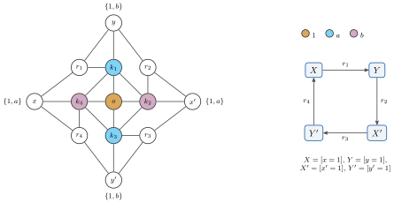

9.5 Úlohy navíc¶
Úlohy procvičují barvení, řezy a plánování agentů: spustit konstrukci z kapitoly na malé instanci, napsat celou redukci v šesti krocích a rozebrat, co musí gadget zaručit. Opírají se o oddíly 9.1, 9.2 a 9.3 a o cvičení 9.4.
Neoficiální úlohy
Úlohy v tomto oddílu nejsou oficiální zadání předmětu. Jsou to procvičovací úlohy navíc k látce kapitoly; všechna čísla a redukce jsme ověřili skripty: redukce hrubou silou na všech grafech do 6 vrcholů (u bisekcí do 5, resp. 6 vrcholů), gadgety výčtem všech obarvení a úlohu s agenty prohledáním všech společných pozic agentů.
9.5.1 Rozcvička¶
Úloha 9.1 (prasátko na konkrétní formuli)
Je dána formule \(\Phi=(x_1\vee x_2\vee\neg x_3)\wedge(\neg x_1\vee\neg x_2\vee x_3)\) a graf \(G_\Phi\) z redukce \(\prob{3-SAT} \redp \prob{3-Coloring}\) (uši prasátka klauzule \(C_j\) jsou v pořadí literálů \(\ell_1,\ell_2,\ell_3\), jak jsou napsané).
- Kolik vrcholů a kolik hran má \(G_\Phi\)?
- Obarvěte paletu barvami \(T,F,B\) a vrcholy literálů podle ohodnocení \(\sigma_1\): \(x_1=1\), \(x_2=0\), \(x_3=0\). Najděte všechna dobarvení obou prasátek. Kolik 3-obarvení \(G_\Phi\) tedy rozšiřuje toto obarvení palety a literálů?
- Totéž pro \(\sigma_2\): \(x_1=0\), \(x_2=0\), \(x_3=1\). Plyne z výsledku, že \(G_\Phi\) není 3-obarvitelný?
Řešení
a) Velikost. \(n=3\) proměnné, \(m=2\) klauzule. Vrcholů je \(3+2n+6m=3+6+12=21\) (paleta, dva na proměnnou, šest na klauzuli). Hrany: paleta \(3\); každá proměnná \(3\) (hrana \(x_i\neg x_i\) a dvě hrany do \(B\)); každé prasátko \(12\) – deset hran \(\ell_1a,\ \ell_2b,\ ab,\ ac,\ bc,\ cd,\ \ell_3e,\ de,\ do,\ eo\) a dvě hrany \(oB\), \(oF\). Celkem \(3+3n+12m=3+9+24=36\) hran.
b) Ohodnocení \(\sigma_1\). Literály: \(x_1=T\), \(\neg x_1=F\), \(x_2=F\), \(\neg x_2=T\), \(x_3=F\), \(\neg x_3=T\). Uši prasátka \(C_1=(x_1\vee x_2\vee\neg x_3)\) mají barvy \((T,F,T)\), uši \(C_2=(\neg x_1\vee\neg x_2\vee x_3)\) barvy \((F,T,F)\). V obou prasátkách je \(o=T\), protože \(o\) sousedí s \(B\) i \(F\). Dobarvení zapisujeme jako \((a,b,c,d,e)\).
- \(C_1\), uši \((T,F,T)\). Vrchol \(e\) sousedí s \(o=T\) a s \(\ell_3=T\), tedy \(e\in\{F,B\}\), a \(d\) sousedí s \(o=T\) a s \(e\), tedy \(d\) je ta druhá z barev \(F,B\). Horní trojúhelník má různé vstupy, takže podle lemmatu 9.2 smí mít \(c\) libovolnou barvu: \(c=T\) vynutí \(b=B\) (\(b\neq F,T\)) a \(a=F\); \(c=F\) vynutí \(a=B\) (\(a\neq T,F\)) a \(b=T\); \(c=B\) vynutí \(a=F\) a \(b=T\). Ještě musí platit \(c\neq d\): pro \((d,e)=(F,B)\) projde \(c\in\{T,B\}\), pro \((d,e)=(B,F)\) projde \(c\in\{T,F\}\). Dobarvení jsou čtyři: \((F,B,T,F,B)\), \((F,T,B,F,B)\), \((F,B,T,B,F)\), \((B,T,F,B,F)\).
- \(C_2\), uši \((F,T,F)\). Teď \(e\) sousedí s \(o=T\) a \(\ell_3=F\), tedy \(e=B\), a \(d\) sousedí s \(T\) a \(B\), tedy \(d=F\). Proto \(c\neq F\): \(c=T\) dá \(a=B\), \(b=F\); \(c=B\) dá \(a=T\), \(b=F\). Dobarvení jsou dvě: \((B,F,T,F,B)\) a \((T,F,B,F,B)\).
Prasátka spolu nesousedí (spojují je jen paleta a vrcholy literálů, které jsou pevně obarvené), dobarvujeme je tedy nezávisle: obarvení palety a literálů podle \(\sigma_1\) rozšiřuje \(4\cdot2=8\) různých 3-obarvení \(G_\Phi\).

Jedno ze čtyř dobarvení \(C_1\), totiž \((F,B,T,F,B)\), a jedno ze dvou dobarvení \(C_2\), totiž \((T,F,B,F,B)\), při \(\sigma_1\). Výstup \(o\) je v obou prasátkách \(T\).
c) Ohodnocení \(\sigma_2\). Uši \(C_1\) dostanou \(x_1=F\), \(x_2=F\), \(\neg x_3=F\) – samé \(F\). Pak \(a,b\) sousedí s ušima barvy \(F\), takže \(\{a,b\}=\{T,B\}\) a \(c=F\) (lemma o trojúhelníku, část 1). Dále \(e\) sousedí s \(o=T\) a \(\ell_3=F\), tedy \(e=B\), a \(d\) sousedí s \(e=B\) a \(o=T\), tedy \(d=F\). Hrana \(cd\) spojuje dvě \(F\) – spor, prasátko \(C_1\) nelze dobarvit (prasátko \(C_2\) s ušima \(T,T,T\) by dobarvit šlo).
Z toho neplyne, že \(G_\Phi\) není 3-obarvitelný. Ukázali jsme jen, že žádné 3-obarvení nemá literály obarvené podle \(\sigma_2\) – to odpovídá tomu, že \(\sigma_2\) nesplňuje \(C_1\). Podle věty 9.3 je \(G_\Phi\) 3-obarvitelný, právě když nějaké ohodnocení splňuje \(\Phi\); \(\sigma_1\) takové je, a podle bodu b) je \(G_\Phi\) 3-obarvitelný.
Úloha 9.2 (2-barvení je v P)
Problém \(\href{#un-9-2}{\class{woo-pk-pojem-2coloring}{\prob{2-Coloring}}}\): lze vrcholy grafu \(G\) obarvit dvěma barvami tak, aby žádná hrana nespojovala dva vrcholy stejné barvy?
- Navrhněte pro \(\href{#un-9-2}{\class{woo-pk-pojem-2coloring}{\prob{2-Coloring}}}\) polynomiální algoritmus, dokažte jeho správnost a odhadněte čas.
- Spusťte ho na grafech \(G_1\) a \(G_2\) na vrcholech \(a,\dots,h\). Oba obsahují kružnici \(a,b,c,d,e,f\) (hrany \(ab,bc,cd,de,ef,fa\)) a hrany \(ag\), \(gh\); navíc \(G_1\) má hranu \(hd\) a \(G_2\) hranu \(hc\). Začněte ve vrcholu \(a\) a sousedy procházejte abecedně. Pro odpověď \(\NE\) najděte lichou kružnici.
Řešení
a) Algoritmus. Pro každou komponentu souvislosti zvolíme vrchol \(r\) a prohledáním do šířky (BFS) spočteme vzdálenosti \(\dist(r,v)\) všech jejích vrcholů. Vrchol obarvíme barvou 1, je-li \(\dist(r,v)\) sudá, a barvou 2, je-li lichá. Pak projdeme všechny hrany: spojuje-li některá dva vrcholy stejné barvy, odpovíme \(\NE\), jinak \(\ANO\) (a obarvení vypíšeme).
Čas. BFS na seznamech sousedů trvá \(O(n+m)\) pro všechny komponenty dohromady a kontrola hran \(O(m)\). Vstup (graf zadaný seznamem vrcholů a hran) má délku aspoň \(n+m\), algoritmus je tedy lineární v délce vstupu.
Správnost.
- Odpoví-li \(\ANO\), prošla kontrola každé hrany, takže vypsané obarvení je platné 2-obarvení.
- Nechť je \(G\) 2-obarvitelný a \(\chi\) je libovolné jeho 2-obarvení. Vezměme vrchol \(v\) v komponentě vrcholu \(r\) a nejkratší cestu \(r=v_0,v_1,\dots,v_d=v\), \(d=\dist(r,v)\). Podél cesty se barvy \(\chi\) střídají, takže \(\chi(v)=\chi(r)\), právě když je \(d\) sudé. Obarvení z BFS se tedy v každé komponentě shoduje s \(\chi\) (až na prohození barev), je to platné obarvení a kontrola žádnou hranu neodmítne – algoritmus odpoví \(\ANO\).
Algoritmus tedy odpoví \(\ANO\), právě když je \(G\) 2-obarvitelný, a \(\href{#un-9-2}{\class{woo-pk-pojem-2coloring}{\prob{2-Coloring}}}\in\href{../ch-cas/ch-cas-tridy-p-a-exp.html#def-tridy}{\class{woo-pk-def-tridy}{\PP}}\).
Certifikát pro \(\NE\). Spojuje-li hrana \(uv\) vrcholy stejné parity, vezmeme cesty ve stromu BFS z \(u\) a z \(v\) do jejich nejbližšího společného předka \(w\). Mají délky \(\dist(r,u)-\dist(r,w)\) a \(\dist(r,v)-\dist(r,w)\), kromě \(w\) jsou disjunktní, a spolu s hranou \(uv\) dají kružnici délky \(\dist(r,u)+\dist(r,v)-2\dist(r,w)+1\), což je liché číslo. Lichou kružnici dvěma barvami obarvit nelze (barvy by se musely střídat), takže odpověď \(\NE\) je správná i s důkazem.
b) Graf \(G_1\). BFS z \(a\): vzdálenost 0 má \(a\); vzdálenost 1 mají \(b,f,g\); vzdálenost 2 mají \(c\) (z \(b\)), \(e\) (z \(f\)), \(h\) (z \(g\)); vzdálenost 3 má \(d\) (z \(c\)). Barva 1 (sudé): \(\{a,c,e,h\}\), barva 2 (liché): \(\{b,d,f,g\}\). Všech devět hran \(ab,bc,cd,de,ef,fa,ag,gh,hd\) spojuje sudý vrchol s lichým, odpověď je \(\ANO\).
Graf \(G_2\). Vzdálenosti vyjdou stejně (i tady \(h\) objevíme z \(g\) a \(d\) z \(c\)). Hrana \(hc\) ale spojuje dva vrcholy se vzdáleností 2, odpověď je \(\NE\). Strom BFS: \(h\to g\to a\) a \(c\to b\to a\), společný předek je \(a\), a lichá kružnice je \(a,g,h,c,b,a\) délky \(2+2+1=5\).

Graf \(G_2\) nakreslený po vrstvách BFS z \(a\). Všechny hrany kromě \(hc\) vedou mezi sousedními vrstvami. Hrana \(hc\) uvnitř vrstvy 2 uzavírá se stromovými cestami (zeleně) lichou kružnici.
Poznámka. Proto řetěz redukcí \(k\text{-}\href{../ch-resice-sat/ch-resice-sat-redukce-do-sat.html#ch-resice-sat-k-barevnost}{\class{woo-pk-pojem-coloring}{\prob{Coloring}}}\mathrel{\href{../ch-redukce/ch-redukce-jak-porovnat-slozitost-dvou-problemu.html#def-redukce}{\class{woo-pk-def-redukce}{\redp}}}(k+1)\text{-}\href{../ch-resice-sat/ch-resice-sat-redukce-do-sat.html#ch-resice-sat-k-barevnost}{\class{woo-pk-pojem-coloring}{\prob{Coloring}}}\) z úlohy Úloha 9.4 (o barvu víc) začíná až u \(k=3\): 2-barvení je snadné, 3-barvení NP-úplné.
Úloha 9.3 (MaxCut ručně a váhy z NAE)
- Hranol má vrcholy \(a,b,c,a',b',c'\), trojúhelníky \(abc\) a \(a'b'c'\) a hrany \(aa'\), \(bb'\), \(cc'\) (9 hran). Najděte maximální řez a dokažte, že větší neexistuje.
- Pro \(\Phi=(x_1\vee x_2\vee x_3)\wedge(x_1\vee x_2\vee\neg x_3)\wedge(\neg x_1\vee\neg x_2\vee x_3)\) sestrojte vážený graf z redukce \(\prob{NAE-3-SAT} \redp \prob{(vážený) MaxCut}\): všechny hrany s vahami a práh. Z NAE-ohodnocení \(x_1=1\), \(x_2=0\), \(x_3=0\) sestrojte řez a ověřte, že práh dosáhne.
Řešení
a) Horní mez. Trojúhelníky \(abc\) a \(a'b'c'\) jsou hranově disjunktní liché kružnice. Z trojúhelníku lze přeříznout nejvýše 2 hrany: kdyby byly přeříznuté všechny tři, střídaly by se strany po kružnici délky 3, což nejde. Spojovací hrany \(aa',bb',cc'\) dají nejvýše 3. Každý řez má tedy nejvýše \(2+2+3=7\) hran.
Řez velikosti 7. \(A=\{a,b',c'\}\), \(B=\{b,c,a'\}\). Přeříznuté jsou \(ab\), \(ac\) (z prvního trojúhelníku), \(a'b'\), \(a'c'\) (z druhého) a všechny tři spojovací hrany. Nepřeříznuté jsou jen \(bc\) a \(b'c'\). Maximální řez má velikost 7.

Maximální řez hranolu. Z každého trojúhelníku zůstane jedna hrana nepřeříznutá (šedě), víc to nejde.
b) Konstrukce. \(n=3\), \(m=3\), takže hrany proměnných \(x_i\bar x_i\) mají váhu \(2m=6\) a práh je \(2mn+2m=18+6=24\). Trojúhelníky klauzulí: \(C_1\) na \(x_1,x_2,x_3\), \(C_2\) na \(x_1,x_2,\bar x_3\), \(C_3\) na \(\bar x_1,\bar x_2,x_3\). Dvojice \(x_1x_2\) je v \(C_1\) i \(C_2\), váhy se sčítají.
| hrana | váha | strany při \(x_1=1,x_2=x_3=0\) | přeříznuta |
|---|---|---|---|
| \(x_1\bar x_1\), \(x_2\bar x_2\), \(x_3\bar x_3\) | \(6\) každá | \(A\) / \(B\) | ano, \(18\) |
| \(x_1x_2\) (\(C_1\), \(C_2\)) | \(2\) | \(A\) / \(B\) | ano, \(2\) |
| \(x_1x_3\) (\(C_1\)) | \(1\) | \(A\) / \(B\) | ano, \(1\) |
| \(x_2x_3\) (\(C_1\)) | \(1\) | \(B\) / \(B\) | ne |
| \(x_1\bar x_3\) (\(C_2\)) | \(1\) | \(A\) / \(A\) | ne |
| \(x_2\bar x_3\) (\(C_2\)) | \(1\) | \(B\) / \(A\) | ano, \(1\) |
| \(\bar x_1\bar x_2\) (\(C_3\)) | \(1\) | \(B\) / \(A\) | ano, \(1\) |
| \(\bar x_1x_3\) (\(C_3\)) | \(1\) | \(B\) / \(B\) | ne |
| \(\bar x_2x_3\) (\(C_3\)) | \(1\) | \(A\) / \(B\) | ano, \(1\) |
Řez. Strana \(A\) = pravdivé literály \(\{x_1,\bar x_2,\bar x_3\}\), strana \(B=\{\bar x_1,x_2,x_3\}\). Hrany proměnných dají \(18\), hrany klauzulí \(2+1+1+1+1=6\), celkem \(24\) – práh je dosažen. Po klauzulích: \(C_1\) má přeříznuté \(x_1x_2\), \(x_1x_3\), \(C_2\) hrany \(x_1x_2\), \(x_2\bar x_3\) a \(C_3\) hrany \(\bar x_1\bar x_2\), \(\bar x_2x_3\) – každá klauzule přispěje přesně 2, jak říká věta 9.11. Naopak z řezu čteme \(x_i=1\), právě když \(x_i\in A\). (Skript potvrdil, že maximální řez má váhu přesně \(24\) a že NAE-ohodnocení jsou právě čtyři – ta s \(x_1\neq x_2\).)
9.5.2 Na úrovni testu¶
Úloha 9.4 (o barvu víc)
Pro pevné \(k\ge1\) je \(k\text{-}\href{../ch-resice-sat/ch-resice-sat-redukce-do-sat.html#ch-resice-sat-k-barevnost}{\class{woo-pk-pojem-coloring}{\prob{Coloring}}}\) problém „je graf \(G\) obarvitelný \(k\) barvami?“. Dokažte, že \(k\text{-}\href{../ch-resice-sat/ch-resice-sat-redukce-do-sat.html#ch-resice-sat-k-barevnost}{\class{woo-pk-pojem-coloring}{\prob{Coloring}}}\mathrel{\href{../ch-redukce/ch-redukce-jak-porovnat-slozitost-dvou-problemu.html#def-redukce}{\class{woo-pk-def-redukce}{\redp}}}(k+1)\text{-}\href{../ch-resice-sat/ch-resice-sat-redukce-do-sat.html#ch-resice-sat-k-barevnost}{\class{woo-pk-pojem-coloring}{\prob{Coloring}}}\), a odvoďte, že \(k\text{-}\href{../ch-resice-sat/ch-resice-sat-redukce-do-sat.html#ch-resice-sat-k-barevnost}{\class{woo-pk-pojem-coloring}{\prob{Coloring}}}\) je NP-úplný pro každé \(k\ge3\). Proč tímto způsobem nedostaneme NP-úplnost \(\href{#un-9-2}{\class{woo-pk-pojem-2coloring}{\prob{2-Coloring}}}\)?
Řešení
Redukce: \(k\text{-}\href{../ch-resice-sat/ch-resice-sat-redukce-do-sat.html#ch-resice-sat-k-barevnost}{\class{woo-pk-pojem-coloring}{\prob{Coloring}}} \mathrel{\href{../ch-redukce/ch-redukce-jak-porovnat-slozitost-dvou-problemu.html#def-redukce}{\class{woo-pk-def-redukce}{\redp}}} (k+1)\text{-}\href{../ch-resice-sat/ch-resice-sat-redukce-do-sat.html#ch-resice-sat-k-barevnost}{\class{woo-pk-pojem-coloring}{\prob{Coloring}}}\), instance \(G\) \(\mapsto\) \(G'=G\) s novým vrcholem \(u\) spojeným se všemi vrcholy.
1. \((k+1)\text{-}\href{../ch-resice-sat/ch-resice-sat-redukce-do-sat.html#ch-resice-sat-k-barevnost}{\class{woo-pk-pojem-coloring}{\prob{Coloring}}}\) je v \(\href{../ch-np/ch-np-tridy-nedeterministicke-casove-slozitosti.html#def-ntime}{\class{woo-pk-def-ntime}{\NP}}\). Certifikát je obarvení \(c\colon V\to\{1,\dots,k+1\}\). Projdeme všechny hrany a zkontrolujeme \(c(v)\neq c(w)\), čas \(O(n+m)\).
2. Konstrukce. Pro \(G=(V,E)\) s \(n\) vrcholy a \(m\) hranami sestrojíme \(G'=(V\cup\{u\},\ E\cup\{uv\mid v\in V\})\), kde \(u\) je nový (univerzální) vrchol.
3. Polynomialita. \(G'\) má \(n+1\) vrcholů a \(m+n\) hran, sestrojíme ho v čase \(O(n+m)\).
4. (\(\Rightarrow\)) Nechť \(c\) je obarvení \(G\) barvami \(1,\dots,k\). Položíme \(c(u)=k+1\). Hrany z \(E\) jsou v pořádku jako v \(G\), hrana \(uv\) spojuje barvu \(k+1\) s barvou \(c(v)\le k\). Je to obarvení \(G'\) barvami \(1,\dots,k+1\).
5. (\(\Leftarrow\)) Nechť \(c'\) je obarvení \(G'\) barvami \(1,\dots,k+1\) a \(c'(u)=j\). Každý \(v\in V\) sousedí s \(u\), takže \(c'(v)\neq j\): vrcholy \(V\) používají jen zbylých \(k\) barev. Hrany \(G\) jsou i v \(G'\), takže \(c'\) zúžené na \(V\) (s přečíslováním zbylých barev na \(1,\dots,k\)) je platné \(k\)-obarvení \(G\).
6. Závěr. \(\href{ch-zoo-3-coloring.html#prob-3col}{\class{woo-pk-prob-3col}{\prob{3-Coloring}}}\) je NP-úplný (věta 9.3). Indukcí podle \(k\): je-li \(k\text{-}\href{../ch-resice-sat/ch-resice-sat-redukce-do-sat.html#ch-resice-sat-k-barevnost}{\class{woo-pk-pojem-coloring}{\prob{Coloring}}}\) NP-těžký, je podle redukce NP-těžký i \((k+1)\text{-}\href{../ch-resice-sat/ch-resice-sat-redukce-do-sat.html#ch-resice-sat-k-barevnost}{\class{woo-pk-pojem-coloring}{\prob{Coloring}}}\) a spolu s bodem 1 NP-úplný. Tedy \(k\text{-}\href{../ch-resice-sat/ch-resice-sat-redukce-do-sat.html#ch-resice-sat-k-barevnost}{\class{woo-pk-pojem-coloring}{\prob{Coloring}}}\) je NP-úplný pro každé \(k\ge3\). (Přímo: \(\href{ch-zoo-3-coloring.html#prob-3col}{\class{woo-pk-prob-3col}{\prob{3-Coloring}}}\mathrel{\href{../ch-redukce/ch-redukce-jak-porovnat-slozitost-dvou-problemu.html#def-redukce}{\class{woo-pk-def-redukce}{\redp}}} k\text{-}\href{../ch-resice-sat/ch-resice-sat-redukce-do-sat.html#ch-resice-sat-k-barevnost}{\class{woo-pk-pojem-coloring}{\prob{Coloring}}}\) přidáním \(k-3\) univerzálních vrcholů, které spolu tvoří kliku.) NP-úplný je tedy i problém \(\href{../ch-resice-sat/ch-resice-sat-redukce-do-sat.html#ch-resice-sat-k-barevnost}{\class{woo-pk-pojem-coloring}{\prob{Coloring}}}\) se vstupem \((G,k)\): \(\href{ch-zoo-3-coloring.html#prob-3col}{\class{woo-pk-prob-3col}{\prob{3-Coloring}}}\mathrel{\href{../ch-redukce/ch-redukce-jak-porovnat-slozitost-dvou-problemu.html#def-redukce}{\class{woo-pk-def-redukce}{\redp}}}\href{../ch-resice-sat/ch-resice-sat-redukce-do-sat.html#ch-resice-sat-k-barevnost}{\class{woo-pk-pojem-coloring}{\prob{Coloring}}}\) zobrazením \(G\mapsto(G,3)\).
Proč ne \(\href{#un-9-2}{\class{woo-pk-pojem-2coloring}{\prob{2-Coloring}}}\). Redukce \(1\text{-}\href{../ch-resice-sat/ch-resice-sat-redukce-do-sat.html#ch-resice-sat-k-barevnost}{\class{woo-pk-pojem-coloring}{\prob{Coloring}}}\mathrel{\href{../ch-redukce/ch-redukce-jak-porovnat-slozitost-dvou-problemu.html#def-redukce}{\class{woo-pk-def-redukce}{\redp}}}\href{#un-9-2}{\class{woo-pk-pojem-2coloring}{\prob{2-Coloring}}}\) je správná, ale \(1\text{-}\href{../ch-resice-sat/ch-resice-sat-redukce-do-sat.html#ch-resice-sat-k-barevnost}{\class{woo-pk-pojem-coloring}{\prob{Coloring}}}\) („nemá \(G\) žádnou hranu?“) je v \(\href{../ch-cas/ch-cas-tridy-p-a-exp.html#def-tridy}{\class{woo-pk-def-tridy}{\PP}}\). Redukce ze snadného problému o těžkosti nic neříká – těžkost se přenáší jen z problému, o kterém ji už víme. A \(\href{#un-9-2}{\class{woo-pk-pojem-2coloring}{\prob{2-Coloring}}}\) je v \(\href{../ch-cas/ch-cas-tridy-p-a-exp.html#def-tridy}{\class{woo-pk-def-tridy}{\PP}}\) (úloha 9.2 (2-barvení je v P)), takže by NP-úplný mohl být jen při \(\href{../ch-cas/ch-cas-tridy-p-a-exp.html#def-tridy}{\class{woo-pk-def-tridy}{\PP}}=\href{../ch-np/ch-np-tridy-nedeterministicke-casove-slozitosti.html#def-ntime}{\class{woo-pk-def-ntime}{\NP}}\).
Pozor na rovinnost (nad rámec přednášky). Pro \(\href{ch-zoo-3-coloring.html#prob-planar}{\class{woo-pk-prob-planar}{\prob{Planar 3-Coloring}}}\) by stejný trik dával „\(\prob{Planar 4-Coloring}\) je NP-těžký“. Odpověď je ale vždy \(\ANO\) (věta o 4 barvách), problém je tedy v \(\href{../ch-cas/ch-cas-tridy-p-a-exp.html#def-tridy}{\class{woo-pk-def-tridy}{\PP}}\) a jeho NP-těžkost by znamenala \(\href{../ch-cas/ch-cas-tridy-p-a-exp.html#def-tridy}{\class{woo-pk-def-tridy}{\PP}}=\href{../ch-np/ch-np-tridy-nedeterministicke-casove-slozitosti.html#def-ntime}{\class{woo-pk-def-ntime}{\NP}}\). Chyba: univerzální vrchol rovinnost obecně ničí, např. z rovinného \(K_4\) udělá nerovinný \(K_5\). Výstup redukce pak není instancí rovinné varianty.
Úloha 9.5 (pokrytí klikami)
Problém \(\href{#un-9-5}{\class{woo-pk-pojem-clique-cover}{\prob{Clique Cover}}}\): je dán graf \(G=(V,E)\) a číslo \(k\). Lze \(V\) rozdělit na nejvýše \(k\) disjunktních množin \(Q_1,\dots,Q_j\) (\(j\le k\)) tak, aby každá \(Q_i\) byla klika (každé dva její vrcholy jsou v \(G\) spojené hranou)? Dokažte, že \(\href{#un-9-5}{\class{woo-pk-pojem-clique-cover}{\prob{Clique Cover}}}\) je NP-úplný. Nápověda: převádějte z problému 3-Coloring.
Řešení
Redukce: \(\href{ch-zoo-3-coloring.html#prob-3col}{\class{woo-pk-prob-3col}{\prob{3-Coloring}}} \mathrel{\href{../ch-redukce/ch-redukce-jak-porovnat-slozitost-dvou-problemu.html#def-redukce}{\class{woo-pk-def-redukce}{\redp}}} \href{#un-9-5}{\class{woo-pk-pojem-clique-cover}{\prob{Clique Cover}}}\), instance \(G\) \(\mapsto\) \((\overline G,\ 3)\), kde \(\overline G\) je doplněk grafu \(G\).
1. \(\href{#un-9-5}{\class{woo-pk-pojem-clique-cover}{\prob{Clique Cover}}}\) je v \(\href{../ch-np/ch-np-tridy-nedeterministicke-casove-slozitosti.html#def-ntime}{\class{woo-pk-def-ntime}{\NP}}\). Certifikát je přiřazení \(q\colon V\to\{1,\dots,k\}\) (číslo množiny pro každý vrchol). Pro každou dvojici vrcholů se stejným číslem ověříme, že je spojená hranou: \(O(n^2)\) dvojic.
2. Konstrukce. Z \(G=(V,E)\) sestrojíme \(\overline G=(V,\overline E)\), kde \(\{u,v\}\in\overline E\), právě když \(u\neq v\) a \(\{u,v\}\notin E\), a položíme \(k=3\).
3. Polynomialita. \(\overline G\) má \(n\) vrcholů a \(\binom n2-m\) hran, projdeme všechny dvojice: čas \(O(n^2)\).
Pozorování. Množina \(Q\subseteq V\) je nezávislá v \(G\), právě když je klikou v \(\overline G\) (každé dva vrcholy \(Q\) nejsou spojené v \(G\) \(\iff\) jsou spojené v \(\overline G\)). Barevná třída obarvení je přesně nezávislá množina.
4. (\(\Rightarrow\)) Nechť \(c\colon V\to\{1,2,3\}\) je 3-obarvení \(G\) a \(V_i=c^{-1}(i)\). Každá \(V_i\) je nezávislá v \(G\), tedy klika v \(\overline G\). Neprázdné množiny z \(V_1,V_2,V_3\) (je jich nejvýše 3) rozdělují \(V\) na kliky grafu \(\overline G\).
5. (\(\Leftarrow\)) Nechť \(V=Q_1\cup\dots\cup Q_j\), \(j\le3\), je rozdělení na kliky grafu \(\overline G\). Položme \(c(v)=i\) pro \(v\in Q_i\). Kdyby hrana \(uv\in E\) měla oba konce v téže \(Q_i\), byly by \(u,v\) spojené v \(\overline G\), tedy \(uv\notin E\) – spor. Každá hrana \(G\) má konce v různých množinách, \(c\) je 3-obarvení \(G\).
6. Závěr. \(\href{ch-zoo-3-coloring.html#prob-3col}{\class{woo-pk-prob-3col}{\prob{3-Coloring}}}\) je NP-úplný, tedy \(\href{#un-9-5}{\class{woo-pk-pojem-clique-cover}{\prob{Clique Cover}}}\) je NP-těžký a podle bodu 1 NP-úplný.

„Domeček“ \(G\) (čtverec \(abcd\) se střechou \(e\)) a jeho doplněk \(\overline G\) s hranami \(ac,bd,ce,de\). Barevné třídy \(\{a,c\}\), \(\{b,d\}\), \(\{e\}\) jsou v \(G\) nezávislé a v \(\overline G\) jsou to kliky (tlustě). Všimni si: totéž zobrazení funguje i obráceně, \(\href{#un-9-5}{\class{woo-pk-pojem-clique-cover}{\prob{Clique Cover}}}\) a barvení doplňku jsou jeden a týž problém. Proto je \(\href{#un-9-5}{\class{woo-pk-pojem-clique-cover}{\prob{Clique Cover}}}\) s \(k=2\) v \(\href{../ch-cas/ch-cas-tridy-p-a-exp.html#def-tridy}{\class{woo-pk-def-tridy}{\PP}}\): stačí otestovat, zda je \(\overline G\) 2-obarvitelný (úloha 9.2 (2-barvení je v P)).
Úloha 9.6 (dva agenti v chodbě)
Graf je cesta \(a-b-c-d-e\) a vrchol \(p\) („výklenek“) spojený jen s \(c\). Agent 1 jde z \(a\) do \(e\), agent 2 z \(e\) do \(a\). Pravidla jsou jako v definici 9.13: v každém kroku agent stojí, nebo přejde na souseda; dva agenti nesmí stát na stejném vrcholu ani si vyměnit místa po hraně; vstoupit na vrchol, který jiný agent v tomtéž kroku opouští, se smí (tak se pohybuje i blokátor v gadgetu klauzule).
- Určete nejmenší makespan \(\ell\) a dokažte, že menší nestačí.
- Ukažte, že bez výklenku \(p\) neexistuje plán pro žádné \(\ell\).
- Bez výklenku, ale ve variantě se swapy (výměna po hraně povolena): jaký je nejmenší makespan?
Řešení
Pořadí na cestě. Dokud oba agenti stojí na cestě \(a,\dots,e\), očíslujme vrcholy \(1,\dots,5\) a sledujme rozdíl \(\delta=\mathrm{poz}_2-\mathrm{poz}_1\). Na začátku je \(\delta=4\), v cíli \(\delta=-4\). Za krok se každá pozice změní nejvýše o 1, takže \(\delta\) nejvýše o 2. Hodnota \(\delta=0\) je kolize na vrcholu. Ze kladných hodnot do záporných se tedy jde jen skokem z \(\delta=1\) na \(\delta=-1\): agenti stojí vedle sebe a oba přejdou na místo toho druhého – to je výměna po hraně, zakázaná.
b) Bez výklenku stojí agenti stále na cestě a podle pozorování se nikdy nevymění. Plán neexistuje pro žádné \(\ell\): agenti si v chodbě navzájem blokují cestu.
a) Dolní mez. Podle pozorování musí některý agent někdy vstoupit do \(p\) (jinak by se nevyměnili). Ten agent ujde ze startu do \(p\) aspoň \(\dist(a,p)=\dist(e,p)=3\) kroků a z \(p\) do cíle dalších aspoň \(3\). Makespan je tedy aspoň \(6\), i když oba mají do cíle vzdálenost jen \(4\).
Plán s makespanem 6. Agent 2 uhne do výklenku, agent 1 dvakrát počká:
| krok | 0 | 1 | 2 | 3 | 4 | 5 | 6 |
|---|---|---|---|---|---|---|---|
| agent 1 | \(a\) | \(a\) | \(b\) | \(c\) | \(d\) | \(d\) | \(e\) |
| agent 2 | \(e\) | \(d\) | \(c\) | \(p\) | \(c\) | \(b\) | \(a\) |
V žádném kroku nestojí oba na stejném vrcholu a nikdy si nevymění místa. V kroku 3 vstoupí agent 1 na \(c\), které agent 2 právě opouští do \(p\), a v kroku 4 se agent 2 vrací na \(c\), které právě opouští agent 1 – to pravidla dovolují. Nejmenší makespan je 6. (Skript prohledal všechny dvojice pozic: optimum je 6; kdyby se na právě opouštěný vrchol vstupovat nesmělo, bylo by 8.)

Chodba s výklenkem. Agenti se mohou minout jen tak, že jeden uhne do \(p\); ta zajížďka stojí dva kroky navíc.
c) Se swapy. Oba mají vzdálenost 4, takže \(\ell\ge4\). Při \(\ell=4\) nesmí žádný čekat ani uhnout a jdou po jediných nejkratších cestách \(a,b,c,d,e\) a \(e,d,c,b,a\): v kroku 2 stojí oba na \(c\) – kolize. Tedy \(\ell\ge5\). Plán pro \(\ell=5\): agent 1 jde \(a,a,b,c,d,e\), agent 2 jde \(e,d,c,b,a,a\); mezi kroky 2 a 3 si vymění místa po hraně \(bc\), což varianta se swapy dovoluje. Nejmenší makespan je 5.
Poučení. Vzdálenosti dávají jen dolní mez. Skutečný makespan určují místa, kde se agenti umí vyhnout. Na tom stojí i redukce 3-SAT ≤ₚ MAPF: agenti s nulovou rezervou kolidují přesně na portech.
9.5.3 Těžší úlohy¶
Úloha 9.7 (bisekce: maximální i minimální)
Bisekce grafu s \(2h\) vrcholy je rozdělení \(V=A\cup B\) s \(|A|=|B|=h\). Problém \(\href{#un-9-7}{\class{woo-pk-pojem-max-bisection}{\prob{Max Bisection}}}\): je dán graf \(G\) se sudým počtem vrcholů a číslo \(k\); existuje bisekce, která přeřízne aspoň \(k\) hran? Problém \(\href{#un-9-7}{\class{woo-pk-pojem-min-bisection}{\prob{Min Bisection}}}\): totéž s „nejvýše \(k\) hran“.
- Dokažte, že \(\href{#un-9-7}{\class{woo-pk-pojem-max-bisection}{\prob{Max Bisection}}}\) je NP-úplný. Nápověda: převádějte z MaxCut. Proč nestačí identita?
- Dokažte, že \(\href{#un-9-7}{\class{woo-pk-pojem-min-bisection}{\prob{Min Bisection}}}\) je NP-úplný, ačkoli \(\prob{MinCut}\) je v \(\href{../ch-cas/ch-cas-tridy-p-a-exp.html#def-tridy}{\class{woo-pk-def-tridy}{\PP}}\).
Řešení
Redukce: a) \(\href{ch-zoo-maxcut.html#prob-maxcut}{\class{woo-pk-prob-maxcut}{\prob{MaxCut}}} \mathrel{\href{../ch-redukce/ch-redukce-jak-porovnat-slozitost-dvou-problemu.html#def-redukce}{\class{woo-pk-def-redukce}{\redp}}} \href{#un-9-7}{\class{woo-pk-pojem-max-bisection}{\prob{Max Bisection}}}\), instance \((G,k)\) \(\mapsto\) \((G',\ k)\), kde \(G'\) je \(G\) s \(n\) přidanými izolovanými vrcholy; b) \(\href{#un-9-7}{\class{woo-pk-pojem-max-bisection}{\prob{Max Bisection}}} \mathrel{\href{../ch-redukce/ch-redukce-jak-porovnat-slozitost-dvou-problemu.html#def-redukce}{\class{woo-pk-def-redukce}{\redp}}} \href{#un-9-7}{\class{woo-pk-pojem-min-bisection}{\prob{Min Bisection}}}\), instance \((G,k)\) s \(|V|=2h\) \(\mapsto\) \((\overline G,\ h^2-k)\).
a) 1. \(\href{#un-9-7}{\class{woo-pk-pojem-max-bisection}{\prob{Max Bisection}}}\) je v \(\href{../ch-np/ch-np-tridy-nedeterministicke-casove-slozitosti.html#def-ntime}{\class{woo-pk-def-ntime}{\NP}}\). Certifikát je rozdělení \((A,B)\); ověříme \(|A|=|B|\), spočteme přeříznuté hrany a porovnáme s \(k\), čas \(O(n+m)\).
2. Konstrukce. Pro \(G=(V,E)\) s \(n\) vrcholy sestrojíme \(G'=(V\cup I,\ E)\), kde \(I\) je \(n\) nových vrcholů bez hran; \(k\) ponecháme. \(G'\) má \(2n\) vrcholů, tedy sudý počet.
3. Polynomialita. Přidáme \(n\) vrcholů, čas \(O(n+m)\).
4. (\(\Rightarrow\)) Nechť řez \((A,B)\) grafu \(G\) přeřízne aspoň \(k\) hran, \(|A|=p\), \(|B|=n-p\). Do \(A\) přidáme \(n-p\) vrcholů z \(I\) a do \(B\) zbylých \(p\). Vznikne \(A'\), \(B'\) s \(|A'|=|B'|=n\), tedy bisekce \(G'\). Izolované vrcholy nemají hrany, takže přeříznuté jsou stejné hrany jako předtím – aspoň \(k\).
5. (\(\Leftarrow\)) Nechť bisekce \((A',B')\) grafu \(G'\) přeřízne aspoň \(k\) hran. Položme \(A=A'\cap V\), \(B=B'\cap V\); to je rozdělení \(V\). Všechny hrany \(G'\) jsou hrany \(G\) a hrana je přeříznutá \((A,B)\), právě když je přeříznutá \((A',B')\). Řez \((A,B)\) má tedy aspoň \(k\) hran.
6. Závěr. \(\href{ch-zoo-maxcut.html#prob-maxcut}{\class{woo-pk-prob-maxcut}{\prob{MaxCut}}}\) je NP-úplný (i bez vah, redukce \(\prob{vážený MaxCut} \redp \prob{MaxCut}\)), tedy \(\href{#un-9-7}{\class{woo-pk-pojem-max-bisection}{\prob{Max Bisection}}}\) je NP-těžký a podle bodu 1 NP-úplný.
Proč ne identita. Maximální řez může být nevyvážený. Hvězda \(K_{1,3}\) (střed \(s\), listy \(l_1,l_2,l_3\)) má maximální řez 3 (\(\{s\}\) proti listům), ale každá bisekce dá \(s\) k jednomu listu a přeřízne jen 2 hrany. Izolované vrcholy slouží jako „výplň“, kterou se libovolný řez dorovná na bisekci, aniž se změní počet přeříznutých hran. (Pro liché \(n\) by identita nebyla ani instancí.)

Vlevo hvězda bez výplně, vpravo s výplní: řez \(\{s\}\) proti listům se doplní třemi izolovanými vrcholy na straně \(A'\) a jedním na straně \(B'\) (malé kroužky).
b) Konstrukce. Z instance \((G,k)\) \(\href{#un-9-7}{\class{woo-pk-pojem-max-bisection}{\prob{Max Bisection}}}\) s \(|V|=2h\) sestrojíme \((\overline G,\ h^2-k)\); je-li \(k>h^2\), vypíšeme pevnou \(\NE\)-instanci (\(K_2\) s \(k=0\): jediná bisekce přeřízne 1 hranu).
Klíčová rovnost. Pro každou bisekci \((A,B)\) je každá dvojice \(\{a,b\}\) s \(a\in A\), \(b\in B\) hranou právě jednoho z grafů \(G\), \(\overline G\). Takových dvojic je \(|A|\cdot|B|=h^2\), tedy
Body 1–6. \(\href{#un-9-7}{\class{woo-pk-pojem-min-bisection}{\prob{Min Bisection}}}\in\href{../ch-np/ch-np-tridy-nedeterministicke-casove-slozitosti.html#def-ntime}{\class{woo-pk-def-ntime}{\NP}}\) stejně jako v a). Doplněk sestrojíme v čase \(O(n^2)\). (\(\Rightarrow\)) Bisekce s \(\mathrm{cut}_G\ge k\) má podle rovnosti \(\mathrm{cut}_{\overline G}=h^2-\mathrm{cut}_G\le h^2-k\). (\(\Leftarrow\)) Bisekce \(\overline G\) s \(\mathrm{cut}_{\overline G}\le h^2-k\) je i bisekcí \(G\) a má \(\mathrm{cut}_G=h^2-\mathrm{cut}_{\overline G}\ge k\). (Pro \(k>h^2\) jsou obě odpovědi \(\NE\), protože řez má nejvýše \(h^2\) hran.) Spolu s a) je \(\href{#un-9-7}{\class{woo-pk-pojem-min-bisection}{\prob{Min Bisection}}}\) NP-úplný.
Proč to není spor s \(\prob{MinCut}\in\href{../ch-cas/ch-cas-tridy-p-a-exp.html#def-tridy}{\class{woo-pk-def-tridy}{\PP}}\). \(\prob{MinCut}\) hledá nejmenší řez s oběma stranami neprázdnými, ale bez podmínky na velikost stran – to umí toky. Těžkost přináší právě podmínka \(|A|=|B|\): vyvážený řez může být mnohem větší než nejmenší řez bez podmínky.
Úloha 9.8 (co musí umět gadget pro křížení)
Gadget pro křížení z lemmatu 9.9 má 13 vrcholů: střed \(o\), kosočtverec \(k_1\) (nahoře), \(k_2\) (vpravo), \(k_3\) (dole), \(k_4\) (vlevo), rohy \(r_1,r_2,r_3,r_4\) a terminály \(x\) (vlevo), \(y\) (nahoře), \(x'\) (vpravo), \(y'\) (dole). Hrany: \(ok_1,ok_2,ok_3,ok_4\); kružnice \(k_1k_2k_3k_4\); \(yk_1\), \(x'k_2\), \(y'k_3\), \(xk_4\); roh \(r_1\) sousedí s \(y,x,k_1\), roh \(r_2\) s \(y,x',k_2\), roh \(r_3\) s \(x',y',k_3\) a roh \(r_4\) s \(x,y',k_4\) (celkem 24 hran).
- Dokažte lemma úplně: v každém 3-obarvení je \(x=x'\) a \(y=y'\) (barvy), a každé obarvení terminálů s \(x=x'\), \(y=y'\) (pro \(x=y\) i pro \(x\neq y\)) jde doplnit. Kolik má gadget 3-obarvení?
- K čemu redukce \(\prob{3-Coloring} \redp \prob{Planar 3-Coloring}\) potřebuje kterou vlastnost? Ukažte příkladem, že redukce by byla chybná, kdyby gadget šel doplnit jen pro \(x\neq y\).
- Kolik vrcholů a hran má výsledný graf \(G'\), má-li \(G\) \(n\) vrcholů, \(m\) hran a nakreslení s \(c\) kříženími?
Řešení
a) Krok 1: kolo. Barvu středu \(o\) nazvěme \(1\). Vrcholy \(k_1,\dots,k_4\) sousedí s \(o\), mají tedy barvy ze zbylých dvou a kružnice \(k_1k_2k_3k_4\) se jimi musí obarvit střídavě: \(k_1=k_3=:a\), \(k_2=k_4=:b\), kde \(1,a,b\) jsou tři různé barvy.
Krok 2: terminály. \(x\) sousedí s \(k_4=b\), tedy \(x\in\{1,a\}\); stejně \(x'\) (soused \(k_2=b\)) \(x'\in\{1,a\}\). \(y\) sousedí s \(k_1=a\), tedy \(y\in\{1,b\}\); stejně \(y'\in\{1,b\}\). Označme \(X=[x=1]\), \(Y=[y=1]\), \(X'=[x'=1]\), \(Y'=[y'=1]\) (pravdivostní hodnoty).
Krok 3: rohy.
- \(r_1\) sousedí s \(k_1=a\), tedy \(r_1\in\{1,b\}\), a nesmí mít barvu \(x\) ani \(y\). Barva chybí, právě když \(x=1\) a \(y=b\). Proto platí \(X\Rightarrow Y\).
- \(r_2\) sousedí s \(k_2=b\), tedy \(r_2\in\{1,a\}\setminus\{y,x'\}\). Barva chybí, právě když \(y=1\) a \(x'=a\): \(Y\Rightarrow X'\).
- \(r_3\) sousedí s \(k_3=a\), tedy \(r_3\in\{1,b\}\setminus\{x',y'\}\). Barva chybí, právě když \(x'=1\) a \(y'=b\): \(X'\Rightarrow Y'\).
- \(r_4\) sousedí s \(k_4=b\), tedy \(r_4\in\{1,a\}\setminus\{x,y'\}\). Barva chybí, právě když \(y'=1\) a \(x=a\): \(Y'\Rightarrow X\).
Implikace tvoří kruh \(X\Rightarrow Y\Rightarrow X'\Rightarrow Y'\Rightarrow X\), takže \(X=Y=X'=Y'\). Buď jsou všechny pravdivé, a pak \(x=y=x'=y'=1\); nebo všechny nepravdivé, a pak \(x=x'=a\) a \(y=y'=b\). V obou případech \(x=x'\) a \(y=y'\).

Vlevo gadget s vynucenými barvami kola a možnými barvami terminálů. Vpravo kruh implikací: každý roh dá jednu implikaci, dohromady vynutí \(X=Y=X'=Y'\).
Krok 4: doplnění. Nechť jsou dány barvy terminálů s \(x=x'\) a \(y=y'\).
- \(x=y\): středu dáme barvu \(x\) (tedy \(1:=x\)), \(a,b\) jsou zbylé dvě barvy v libovolném pořadí. Rohy jsou vynucené: \(r_1=b\), \(r_2=a\), \(r_3=b\), \(r_4=a\) (roh \(r_1\) sousedí s \(1,1,a\), roh \(r_2\) s \(1,1,b\) atd.). Všechny hrany jsou v pořádku.
- \(x\neq y\): položíme \(a:=x\), \(b:=y\) a středu dáme třetí barvu \(1\). Každý roh sousedí s jedním \(a\) a jedním \(b\) (např. \(r_1\) s \(x=a\), \(y=b\), \(k_1=a\)), dostane tedy barvu \(1\). Rohy spolu ani se středem nesousedí.
Počet. Pro \(x=y\): 3 volby barvy \(x\) a 2 pořadí \(a,b\), zbytek vynucený – 6 obarvení. Pro \(x\neq y\): 6 uspořádaných dvojic barev, zbytek vynucený – 6 obarvení. Celkem 12, tj. až na permutaci barev (\(3!=6\)) právě dvě obarvení z obr. 9.9. (Výčet všech \(3^{13}\) obarvení skriptem dal také 12 a potvrdil kruh implikací.)
b) Role vlastností. Na hraně \(uv\), která kříží jiné hrany, je \(u\) terminál \(x\) prvního gadgetu a \(v\) je spojen hranou s terminálem \(x'\) posledního.
- Vynucení \(x=x'\), \(y=y'\) potřebuje směr (\(\Leftarrow\)): z 3-obarvení \(G'\) čteme obarvení \(G\). Barva \(u\) se po řetězu přenese do \(x'\) posledního gadgetu, a hrana \(x'v\) tak vynutí \(\mathrm{barva}(u)\neq\mathrm{barva}(v)\). Bez vynucení by se podmínka hrany \(uv\) ztratila a \(G'\) by mohl být obarvitelný, i když \(G\) není.
- Doplnitelnost pro všechna taková obarvení terminálů potřebuje směr (\(\Rightarrow\)): z 3-obarvení \(G\) stavíme obarvení \(G'\). Terminály \(x\) a \(y\) jednoho gadgetu leží na dvou různých hranách \(uv\) a \(wz\), jejichž konce spolu v \(G\) nemusí nijak souviset – v obarvení \(G\) může být \(u=w\) i \(u\neq w\) a gadget musí jít doplnit v obou případech.
- Rovinnost a pořadí terminálů \(x,y,x',y'\) na vnější stěně zaručí, že gadget lze vložit místo bodu křížení tak, aby čtyři kusy hran přicházely zleva, shora, zprava a zdola bez nového křížení – \(G'\) je rovinný.
Protipříklad. Kdyby gadget šel doplnit jen pro \(x\neq y\), přidal by každý gadget navíc podmínku \(\mathrm{barva}(u)\neq\mathrm{barva}(w)\). Vezměme \(G\) s vrcholy \(u,v,w,z,p,q\) a hranami \(pq\), \(up\), \(uq\), \(wp\), \(wq\), \(uv\), \(wz\), nakreslený tak, že se \(uv\) a \(wz\) kříží. \(G\) je 3-obarvitelný (\(p,q\) dostanou dvě barvy, \(u\) i \(w\) třetí, \(v,z\) cokoli jiného), ale v každém jeho 3-obarvení je \(\mathrm{barva}(u)=\mathrm{barva}(w)\) – oba se liší od \(p\) i \(q\). Takový \(G'\) by 3-obarvitelný nebyl: redukce by zobrazila \(\ANO\)-instanci na \(\NE\)-instanci. (Skript: \(G\) má 24 3-obarvení, ve všech je \(u=w\).)
c) Velikost \(G'\). Každé křížení přinese gadget s 9 vnitřními vrcholy (\(o\), \(k_1,\dots,k_4\), \(r_1,\dots,r_4\)) a 4 terminály. Na každé z obou křížících se hran je jeden terminál „bližší“ – původní vrchol nebo vzdálený terminál předchozího gadgetu v řetězu – a jeden „vzdálený“, nový. Nové vrcholy jsou tedy \(9+2=11\) na křížení. Každá křížená hrana zmizí a místo ní přibude jedna hrana od vzdáleného terminálu posledního gadgetu k druhému konci; k tomu 24 hran každého gadgetu. Proto
Pro obr. 9.11 (\(n=6\), \(m=3\), \(c=2\)) vyjde \(28\) vrcholů a \(51\) hran (ověřeno sestrojením grafu). Dvě hrany se v nakreslení úsečkami kříží nejvýše jednou, takže \(c\le\binom m2\le m^2\) a \(G'\) má polynomiální velikost.